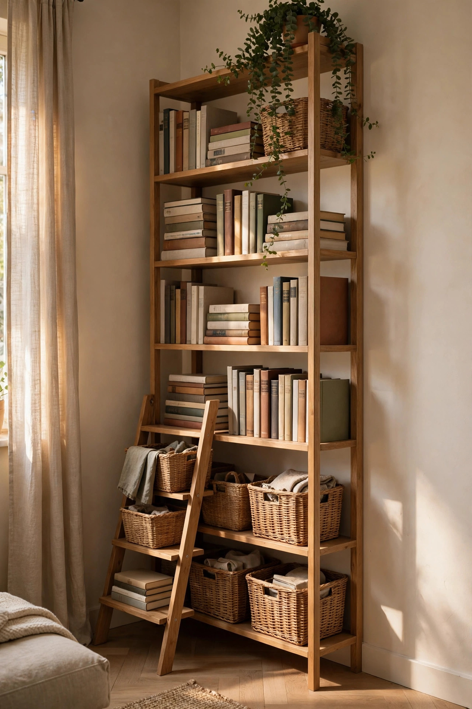

Small Space Storage & Organisation
Small Apartment Vertical Storage Ideas: Go Up, Not Out
Intro
Small apartments run out of floor space long before they run out of wall space. The walls above the sofa, over the door and beside the wardrobe are usually empty — and that empty height is free storage waiting to be used. Going up, not out, is the cheapest way to make a tiny flat feel bigger.
This guide has 12 vertical storage ideas — tall shelves, over-door racks and high baskets — most under $25 and most renter-friendly. Each idea lists what it costs. The rule is simple: things you use every day stay at hand height, and things you use rarely go up high.

1. A tall narrow bookshelf — $30–$50
A tall, narrow bookshelf uses one small patch of floor and gives you five or six shelves of storage. It costs about $40 and fits in the gap beside a door or at the end of a sofa. Anchor it to the wall with an anti-tip strap — tall furniture must be fixed, especially with children around. Keep heavy books low and light things high.
2. Floating shelves above the sofa — $15–$25
Two floating shelves above the sofa hold books, plants and photos without taking any floor space. Two shelves cost about $20. Keep them above head height when you sit down, so nobody bumps into them. Use them for display, not for heavy storage — a shelf that sags is worse than no shelf.
3. Over-door racks — $10–$15
An over-door rack hooks over any door with no screws at all. It costs about $12 and holds shoes, cleaning supplies, pantry jars or bathroom bottles, depending on the room. One rack per door adds a whole shelf of storage to a flat. Keep the door able to open fully — check the rack clears the frame.
4. High baskets on top of the wardrobe — $10–$15
The top of the wardrobe is wasted space in most flats. Two or three matching baskets up there hold off-season clothes, spare bedding or craft supplies. Three baskets cost about $12. Label them, and keep a small step stool nearby, so reaching them is easy and safe. Matching baskets make the top of the wardrobe look tidy, not messy.
5. A pegboard wall — $15–$25
A pegboard on a kitchen or hallway wall holds hooks, small shelves and baskets that you can move around as your needs change. A pegboard costs about $20 and fits with adhesive strips or a few screws. Use it for utensils in the kitchen, keys and bags in the hallway, or tools in a craft corner. Everything stays visible and within reach.
6. Tension-rod shelves in a narrow gap — $10–$15
A tension rod wedged between two walls in a narrow gap — beside the fridge, in the bathroom, in a wardrobe — creates an instant shelf with no drilling. Two rods cost about $12. They hold light things: spice jars, cleaning sprays, rolled towels. Measure the gap first, and choose a rod that fits snugly.
7. Hooks all the way up the wall — $8–$12
Two rows of hooks use the wall from floor to ceiling: low hooks for bags and dog leads, high hooks for hats, scarves and things you rarely need. Eight hooks cost about $10. Adhesive hooks work on smooth walls and come off without a mark. One hook per item keeps the wall tidy instead of crowded.
8. A ladder shelf leaning on the wall — $25–$40
A leaning ladder shelf needs no screws — it rests against the wall and gives you four or five graduated shelves. It costs about $30. The top shelf is narrow, so it suits plants and photos; the bottom shelf is deep enough for books and baskets. Place it where nobody will walk into it, and keep heavy things low.
9. Storage above the door — $12–$18
A shelf above a doorframe holds the things you use a few times a year — board games, spare bedding, holiday decorations. One shelf costs about $15. It is out of sight and out of the way, which is exactly the point. Keep a step stool in the same room, or the shelf will never be used.
10. A tall shoe cabinet, not a wide one — $40–$60
A tall, slim shoe cabinet holds twelve pairs in the footprint of one floor tile. It costs about $50 and fits in a hallway too narrow for a wide rack. Tip-out drawers keep shoes hidden and the hallway looking clear. Anchor it to the wall, and keep everyday shoes in the top drawer.
11. Hanging baskets from the ceiling — $10–$15
In the kitchen, a hanging basket or a ceiling rail holds fruit, herbs or utensils above the worktop, freeing a whole cupboard. A hanging basket costs about $12. Hang it where it will not hit anyone's head, and keep it light — fruit and herbs, not pots and pans.
12. Use the space above the kitchen cabinets — $0–$10
The gap above the kitchen cabinets holds the things you use rarely: the big roasting tin, the picnic set, the spare tablecloth. Put them in one or two baskets, so the top of the cabinets looks tidy. Two baskets cost about $10, or use boxes you already have for $0. Wipe the tops first — kitchen grease settles there fast.
Conclusion
Vertical storage is the small-flat secret: the floor stays clear because the walls do the work. One tall shelf, a few hooks and the baskets on top of the wardrobe can add a whole cupboard's worth of storage without buying any new furniture. Start with the hooks and the wardrobe baskets today — they take ten minutes and cost almost nothing.
Budget recap
- Floating shelves + hooks: ~$30 - Over-door rack + pegboard: ~$32 - Tall narrow bookshelf: ~$40
Total for a vertical storage setup: ~$30–$60 — or ~$10 with hooks alone.
Pinterest pin titles
- Small Apartment Vertical Storage Ideas — Go Up, Not Out
- 12 Vertical Storage Ideas for Tiny Flats (No Floor Space Needed)
- Your Walls Are Free Storage: 12 Ideas to Go Up, Not Out